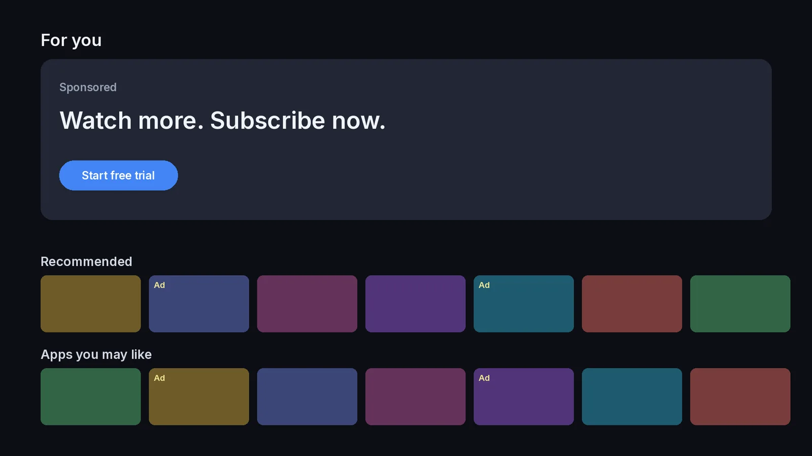
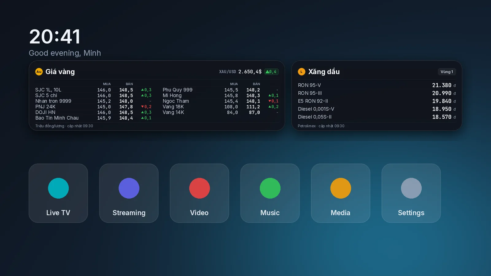
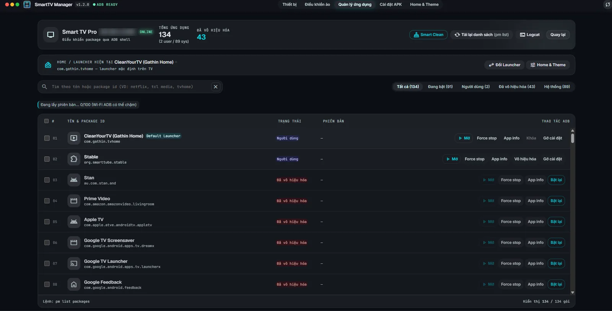
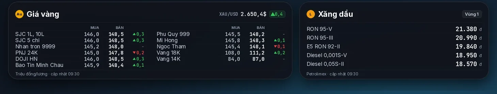
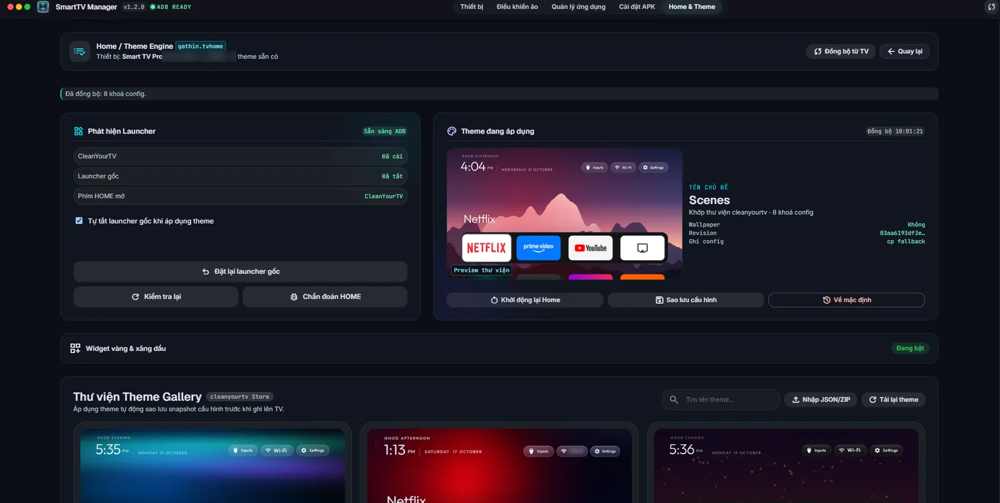
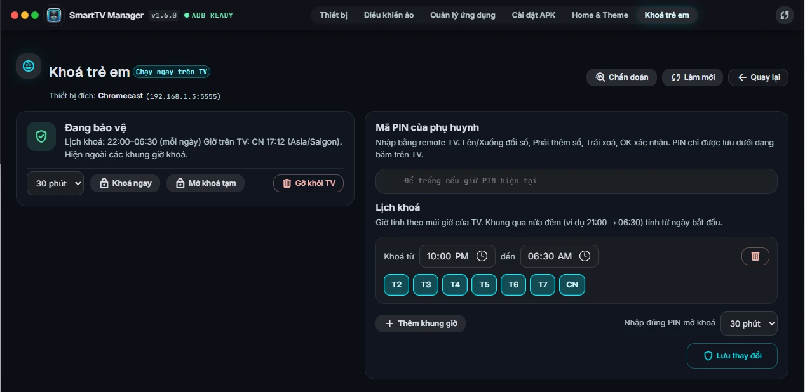
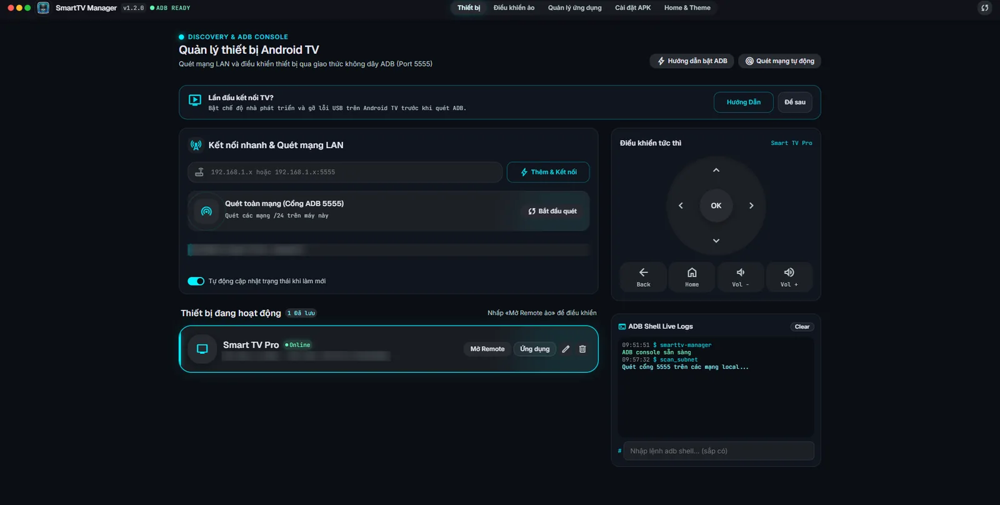

Your TV’s home screen, without the clutter.
Remove ads and apps you never use, build a Home screen of your own, and manage everything from your computer over Wi‑Fi. No commands to type.
Free and open source


See it in 45 seconds.
A quick tour of everything the app does, from connecting the TV to the child lock.
Find what slows your TV down, then switch it off.
See every app on the TV with a readable name. Search by name or package, and filter by what is on, off or installed by you. Disabled apps come back with one click.
- Disable and re-enableSystem apps stay on the TV, just switched off. Turn them back on whenever you like.
- Uninstall your own appsApps you installed can be removed after a confirmation.
- Protected appsCore system apps and your active Home screen are locked, so one wrong click can’t break the TV.
- Install APK filesPick a file on your computer and install it, with a live progress log.

A Home screen that is yours.
SmartTV Manager installs and configures CleanYourTV, an open-source launcher, and applies themes to it from your computer.


- ThemesPick a theme and apply it. Your current setup is backed up first, and the Home screen restarts for you.
- Widgets in the wallpaperPrices are drawn onto the wallpaper image, so they cost the TV nothing to run.
- Remote buttons keep workingSettings, TV, Netflix, YouTube, Prime Video and Media are mapped for TCL remotes.
- Stock launcher, one click backIt is switched off while your theme is on, so the Home button opens yours. Bring the original back any time.
A bedtime for the TV, enforced on the TV.
Set the hours when the screen is off-limits and a parent PIN to open it. A small helper app on the TV keeps the schedule, so it still locks when your computer is off.
- Schedule by day and hourAdd one or more lock windows. A window that crosses midnight, like 22:00 to 06:30, counts from the day it starts.
- PIN from the TV remoteUp and Down change a digit, Right adds one, OK confirms. The PIN is stored on the TV only as a hash, and repeated wrong tries make it wait longer.
- Lock now, unlock for a whileCover the screen right away, or let someone watch for 30 minutes without changing the schedule.
- Settings stay protectedSettings and the app store always ask for the PIN, so the lock can’t simply be switched off. It can’t block HDMI input changes, casting from a phone or a factory reset.

Up and running in three steps.
Turn on debugging on the TV
Settings, Device preferences, About: press OK on Build seven times. Then switch on USB or network debugging in Developer options.
Connect over Wi‑Fi
Type the TV’s IP address into the app and accept the prompt that appears on the TV.
Clean up and customise
Disable apps you don’t need. When asked, let the app install CleanYourTV, then pick a theme.

Download SmartTV Manager
Free and open source, for Windows and macOS.
Windows
Download .zipmacOS
Download .dmgThe app is not code-signed yet. Windows SmartScreen may warn you (choose More info, then Run anyway), and macOS may ask you to allow it in System Settings, Privacy & Security. The source is public if you would rather check or build it yourself.
Questions
Is it safe?
The app runs on your computer and talks to the TV over your local network using ADB. It collects no data. It contacts GitHub to download the launcher and public price sources for the widgets, only when you use those features. Disabling an app is reversible. Uninstalling is not, so the app asks first.
Which TVs does it work with?
It was built and tested on a TCL Google TV running Android 11. App management and APK install use plain ADB, so other Android TV and Google TV models should work. Remote-key mapping is set up for TCL remotes. The launcher needs Android 8 or later.
Do I need to root the TV?
No. You only turn on USB or network debugging.
How do I undo my changes?
Re-enable disabled apps in the app list, use “Reset stock launcher” to bring back the original Home screen, and restore a backup of your previous launcher settings.
Are the widgets only for Vietnam?
The built-in gold and fuel widgets use Vietnamese sources, in VND. App management, APK install and themes work anywhere.
Is this an official TCL or Google tool?
No. It is an independent project, not affiliated with TCL, Google or the author of CleanYourTV. CleanYourTV is MIT licensed.
Buy me a coffee
SmartTV Manager is free and open source. If it saved you some time, you can buy me a coffee to keep the project going.
Entirely optional. A star on GitHub or a bug report helps just as much. Thank you!
Bank transfer (Vietnam)
TPBank · 6652 3918 888
NGUYEN VAN TAI